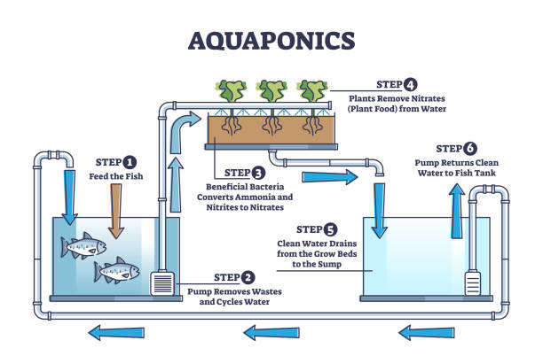

Your response has been recorded and this page has been updated. Please refresh the page to get the latest version. You will not be able to use the page until you refresh
Your response has been recorded and this page has been updated. Please refresh the page to get the latest version. You will not be able to use the page until you refresh
In summary, aquaponics is a new method of farming foods without the use of pesticides and other harmful chemicals. It utilizes the symbiotic relationship between fish and plants. Fish waste provides plants with nutrients, while the plants filter water fish inhabit
As previously mentioned, aquaponics is a new method of farming. What you may not know is that the term was introduced in the 1970s. There is still no consensus on which culture or people first used it, the Mayans or Aztecs. Nevertheless, the Aztecs basically built their own aquaponics system on top of their lakes and bodies of water. Later it was popularized in Southeast Asia to grow rice in which the plants could be easily fertilized. Approaching the 20th Century, North Carolina State University developed the first commercial aquaponics facility in Massachusetts. The practice continues to thrive being widely adopted in Australia, Canada, and the United States.
Aquaponics is essential because it deals with addressing human rights issues such as the eradication of hunger. Many areas of every city and countries are food deserts. It essentially means locals cannot access fresh fruits and vegetables. It may spiral into unhealthy eating behaviors and habits since the main stakeholders are residents, students, and workers. According to a study by The American Journal of Managed Care, over 500 million people live with diabetes and it is expected to be in the billions by 2050. Having an aquaponics system in your backyard or college campus can help alleviate this issue.
You may be thinking what is the problem why is aquaponics more sustainable than current farming methods?
In a closed system, the water is reused and recycled over and over because it basically, is self-cleaning. Alternatively, farming methods require generating and producing a lot of water because the water may run off. This is not sustainable.
It is no secret farmers use boatloads of pesticides, fertilizers, and other chemicals to farm. In Aquaponics water is filtered by plants which leaves no need for chemicals. Furthermore, it means that aquaponics farming does not damage our freshwater supply or runoff into bodies of water
Current farming methods destroy natural landscapes, perpetuate deforestation, and degrade soil. Aquaponics does not require any soil for growth in return keeping biodiversity intact.
{kind=link}
{kind=link}